上篇 · 结论总结
一句话回答：英国整体付费在 13 个完整周内震荡上行、温和增长，老客金额仍是主力；Google 注册与新付费持续收缩，整体增长由「tc 非空且 utm 空」和「tc 为空」补位，并非 Google 带动。
7,90413 周累计注册
166,27813 周累计付费金额
42313 周累计新付费人数
79.9%老付费金额占比
首四周 vs 末四周
| 指标 | 首四周均值 05/04–05/31 | 末四周均值 07/06–08/02 | 判断 |
|---|---|---|---|
| 周注册 | 594.8 | 611.2 | 小幅上升 |
| 周付费金额 | 11,909 | 13,090 | +9.9% |
| 周新付费人数 | 31.2 | 34.8 | +11.2% |
| 周老付费金额 | 9,679 | 10,322 | +6.6%，仍是主力 |
| 注册后 7 天付费率 | 2.31% | 2.41% | 基本持平 |
| 7 天注册 ARPU | 1.61 | 1.70 | 基本持平 |
| 周 Google 注册 | 319.2 | 36.2 | 大幅下降 |
| 周 Google 新付费人数 | 10.0 | 3.5 | 明显收缩 |
核心判断
- 整体付费温和增长：末四周周均金额较首四周提高约 10%，但周间波动仍大，不是陡峭增长。
- 老客托底、新客缓增：老付费金额占总金额 79.9%；新付费人数周均提高约 11%。
- 新注册质量基本持平：7 天付费率 2.31%→2.41%，ARPU 1.61→1.70，未见量质双升。
- Google 未带动增长：周均注册 319→36，周均新付费 10.0→3.5；同期③类 13.5→21.5、④类 7.8→9.8 承担补位。Google 仅贡献 13 周新付费人数的 21.7%。
1. 注册增长
13 个完整周注册在 488–711 人间波动，7 月各周约 590–650 人，较 5 月略高，属温和上行。
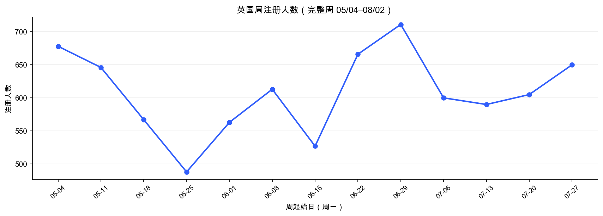
1.1 tc 空 / 非空
tc 为空份额逐周扩大，提示渠道结构变化或归因缺失增加。
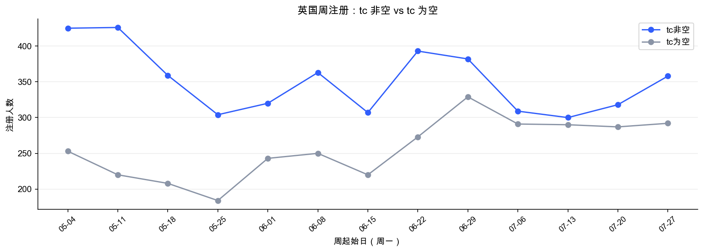
1.2 utm_source
Google 从 5 月初每周 300+ 注册降到 7 月每周约 16–23，utm 为空成为绝对主力。
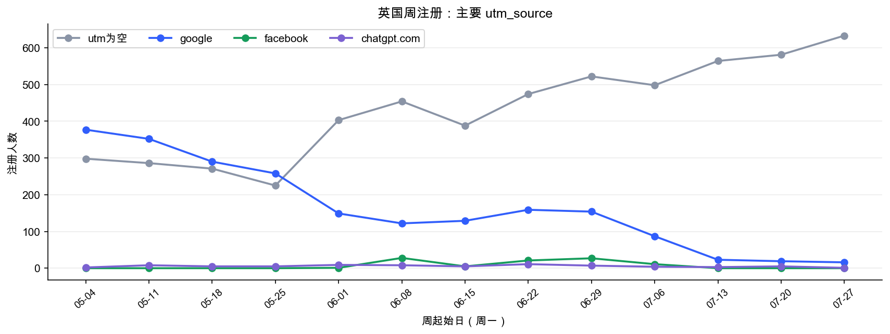
2. 按付费周观察整体与新老付费
周付费金额中枢后移略升，但每周波动仍明显。
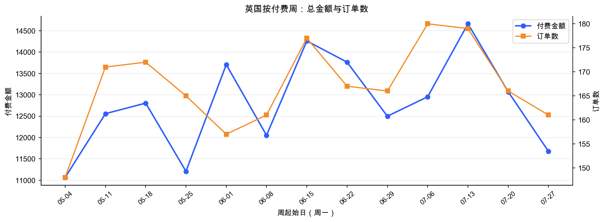
2.1 新付费 vs 老付费
老付费金额始终占主要部分，新付费人数末四周周均 34.8 人，高于首四周 31.2 人。
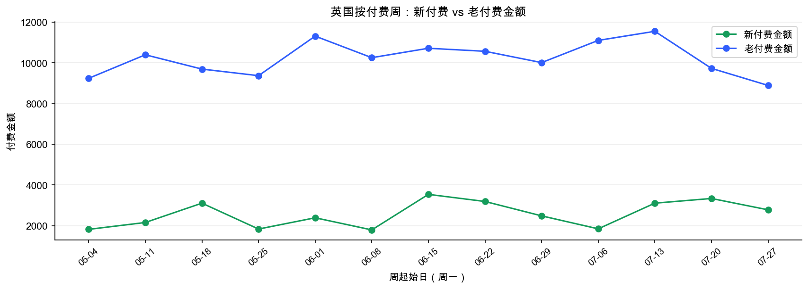
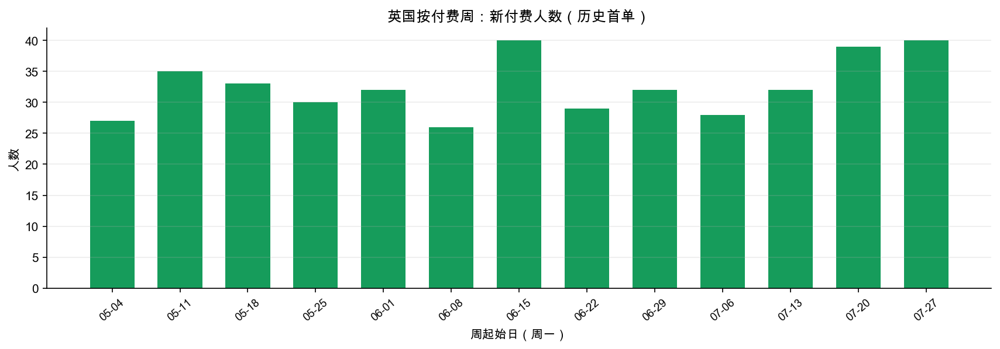
3. 按注册周观察 7 天付费
周付费率在 1.5%–3.9% 间波动，没有形成持续上升趋势；首末四周加权付费率基本持平。
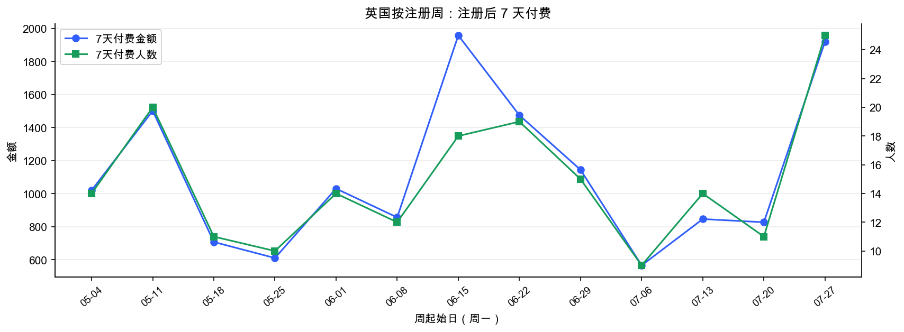
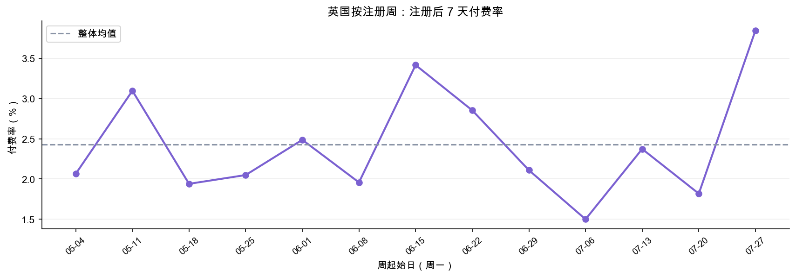
4. tc 与 Google 四分类下钻
新付费仍以 tc 非空为主体，tc 为空贡献在后段有所增加。
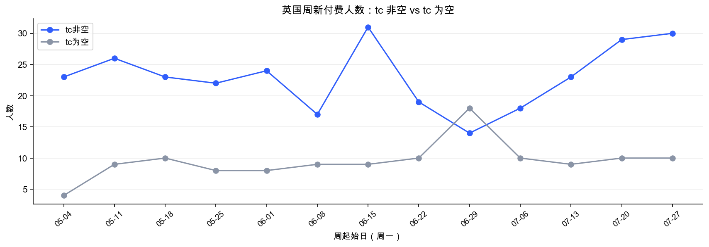
4.1 Google 是否带动整体
没有。Google 新付费人数与金额随注册同步下降；③ tc非空且utm空、④ tc为空上升，抵消了 Google 的收缩。
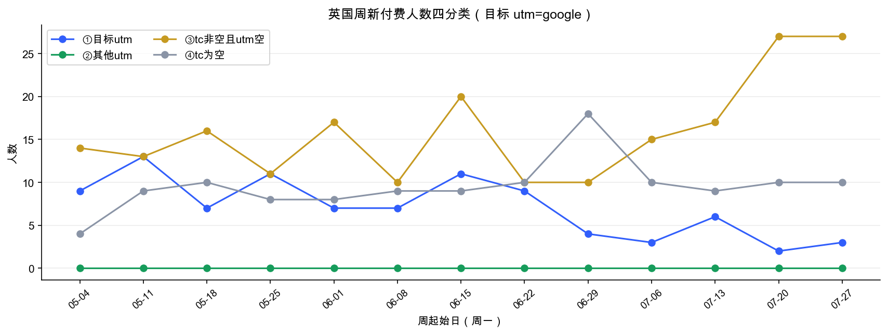
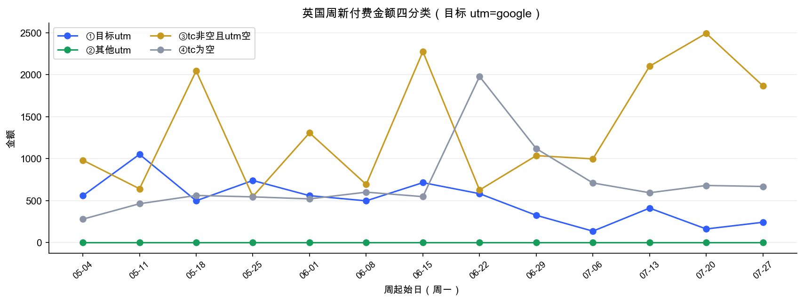
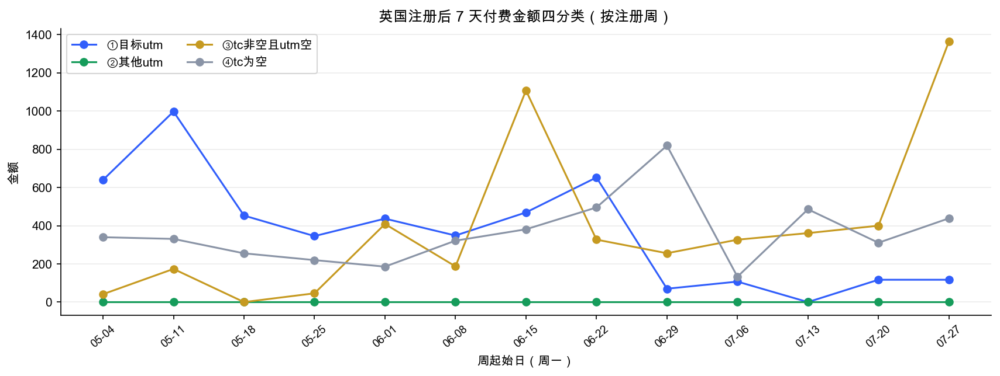
5. 完整周数据表
| 周区间 | 注册 | Google注册 | 付费金额 | 新付费人数 | 老付费金额 | 7天付费率 |
|---|---|---|---|---|---|---|
| 05/04–05/10 | 678 | 377 | 11,065 | 27 | 9,245 | 2.06% |
| 05/11–05/17 | 646 | 352 | 12,558 | 35 | 10,401 | 3.10% |
| 05/18–05/24 | 567 | 290 | 12,805 | 33 | 9,697 | 1.94% |
| 05/25–05/31 | 488 | 258 | 11,209 | 30 | 9,374 | 2.05% |
| 06/01–06/07 | 563 | 149 | 13,707 | 32 | 11,318 | 2.49% |
| 06/08–06/14 | 613 | 122 | 12,051 | 26 | 10,258 | 1.96% |
| 06/15–06/21 | 527 | 129 | 14,261 | 40 | 10,721 | 3.42% |
| 06/22–06/28 | 666 | 159 | 13,763 | 29 | 10,572 | 2.85% |
| 06/29–07/05 | 711 | 154 | 12,499 | 32 | 10,016 | 2.11% |
| 07/06–07/12 | 600 | 87 | 12,953 | 28 | 11,108 | 1.50% |
| 07/13–07/19 | 590 | 23 | 14,662 | 32 | 11,554 | 2.37% |
| 07/20–07/26 | 605 | 19 | 13,071 | 39 | 9,733 | 1.82% |
| 07/27–08/02 | 650 | 16 | 11,675 | 40 | 8,895 | 3.85% |
6. 口径与限制
- 仅使用完整自然周：20260504–20260802 共 13 周；首尾不足一周的 5/1–5/3 与 8/3–8/8 已剔除，不参与计算与画图。
- 所有指标先按日计算，再加总到周；周一为周起始。
- 付费日指标与注册日 7 天付费指标严格分开；历史首单基于全历史净付费订单排序。
- 末周注册截至 8/2，7 天窗口已全部走完，13 周均为成熟窗口。
- utm 为空不等于自然量，可能包含归因缺失；建议结合 Google 消耗核对真实减投幅度。
7. 最终回答
① 英国整体付费是否增长：有温和增长，老客金额托底，新付费人数小幅增加。
② 新注册用户付费是否增长：注册量略升，但 7 天付费率与 ARPU 基本持平，尚不是量质双升。
③ Google 是否带动整体：否。Google 注册与新付费均显著下降，整体增长由 utm 空相关类别补位。